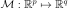
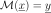
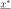
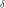
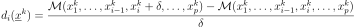
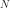

Morris¶
-
class
otmorris.Morris(*args)¶ Morris method.
Available constructors:
Morris(inputSample, outputSample)
Morris(experiment, model)
Parameters: inputSample :
openturns.SampleExperiment generated thanks to the generate method of the
MorrisExperimentoutputSample :
openturns.SampleResponse model applied on inputSample
experiment :
otmorris.MorrisExperimentMorris experiment
model :
openturns.FunctionResponse model to be applied on input data
Notes
We note  with .
The Morris method is a screening method, which is known to be very efficient in case of huge number of input parameters (p >> 1). It is a qualitative sensitivity analysis method which is based on design of experiments and allows to identify the few important factors at a cost of r * (p + 1) simulations. The experiments are of type OAT (One At Time); i.e. only one parameter vary at a time.
The method helps to split input parameters into three groups:
- Those with negligible effects on the output,
- Those with significant and linear effects on the output,
- Those with significant and non linear (or with interactions) effects on the output.
The method rely on input designs defined in the hypersphere unit. To sum up the key points of the method, we consider a point named  in this hypersphere and a parameter  (parameter of discretization if we consider a regular experiment for example). Starting from the point, we choose randomly one direction by increasingslash decreasing one component one component of the point with . Conditionnaly to this direction, we choose then the p-1 directions by randomly selecting one direction at time. We get then a trajectory (path).
The Morris method rely on the evaluation of elementary effects which are defined as follow:

With  trajectories, we get the mean and standard deviation of these effects (we consider the mean of absolute mean effects in our case). The mean explains the sensitivity wheras the standard deviation explains the interactions and non linear effects.
With first constructor, we consider that input experiment has been generated thanks to the
MorrisExperimentand output is evaluated outside the platform. With second constructor, we consider that initial experiment is a regular grid defined in![[0,1]^d](../../_images/math/263b9527bfe451701cfdf36280d7e9f520bf402a.svg) .
With thirds constructor, we consider that initial distribution model is uniform with bounds given by the interval argument. Also, the initial experiment is of type regular.
With fourth constructor, we fix the initial design which could be an LHS, an optimal LHS defined in .
With fifth constructor, we fix the initial design which could be an LHS, an optimal LHS defined in .
.
With thirds constructor, we consider that initial distribution model is uniform with bounds given by the interval argument. Also, the initial experiment is of type regular.
With fourth constructor, we fix the initial design which could be an LHS, an optimal LHS defined in .
With fifth constructor, we fix the initial design which could be an LHS, an optimal LHS defined in .Examples
>>> import openturns as ot >>> import otmorris >>> # Define model >>> ot.RandomGenerator.SetSeed(1) >>> alpha = ot.DistFunc.rNormal(10) >>> beta = ot.DistFunc.rNormal(84) >>> gamma = ot.DistFunc.rNormal(280) >>> b0 = ot.DistFunc.rNormal() >>> model = otmorris.MorrisFunction(alpha, beta, gamma, b0) >>> # Number of trajectories >>> r = 5 >>> # Define a k-grid level (so delta = 1/(k-1)) >>> k = 5 >>> morris_experiment = otmorris.MorrisExperimentGrid([k] * 20, r) >>> X = morris_experiment.generate() >>> # Evaluation of the model on the design: evaluation outside OT >>> Y = model(X) >>> # Evaluation of Morris effects >>> morris = otmorris.Morris(X, Y) >>> # Get mean/sigma effects >>> mean_effects = morris.getMeanElementaryEffects() >>> mean_abs_effects = morris.getMeanAbsoluteElementaryEffects() >>> sigma_effects = morris.getStandardDeviationElementaryEffects()
Methods
getClassName()Accessor to the object’s name. getId()Accessor to the object’s id. getInputSample()getMeanAbsoluteElementaryEffects([…])Get the mean of absolute elementary effects. getMeanElementaryEffects([outputMarginal])Get the mean of elementary effects. getName()Accessor to the object’s name. getOutputSample()getShadowedId()Accessor to the object’s shadowed id. getStandardDeviationElementaryEffects([…])Get the standard deviation of elementary effects. getVisibility()Accessor to the object’s visibility state. hasName()Test if the object is named. hasVisibleName()Test if the object has a distinguishable name. setName(*args)Accessor to the object’s name. setShadowedId(*args)Accessor to the object’s shadowed id. setVisibility(*args)Accessor to the object’s visibility state. -
__init__(*args)¶
-
getClassName()¶ Accessor to the object’s name.
Returns: class_name : str
The object class name (object.__class__.__name__).
-
getId()¶ Accessor to the object’s id.
Returns: id : int
Internal unique identifier.
-
getMeanAbsoluteElementaryEffects(outputMarginal=0)¶ Get the mean of absolute elementary effects.
Parameters: marginal : int
Output marginal of interest
Returns: mean:
openturns.PointThe mean effects.
-
getMeanElementaryEffects(outputMarginal=0)¶ Get the mean of elementary effects.
Parameters: marginal : int
Output marginal of interest
Returns: mean:
openturns.PointThe mean effects.
-
getName()¶ Accessor to the object’s name.
Returns: name : str
The name of the object.
-
getShadowedId()¶ Accessor to the object’s shadowed id.
Returns: id : int
Internal unique identifier.
-
getStandardDeviationElementaryEffects(outputMarginal=0)¶ Get the standard deviation of elementary effects.
Parameters: marginal : int
Output marginal of interest
Returns: mean:
openturns.PointThe standard effects
-
getVisibility()¶ Accessor to the object’s visibility state.
Returns: visible : bool
Visibility flag.
-
hasName()¶ Test if the object is named.
Returns: hasName : bool
True if the name is not empty.
-
hasVisibleName()¶ Test if the object has a distinguishable name.
Returns: hasVisibleName : bool
True if the name is not empty and not the default one.
-
setName(*args)¶ Accessor to the object’s name.
Parameters: name : str
The name of the object.
-
setShadowedId(*args)¶ Accessor to the object’s shadowed id.
Parameters: id : int
Internal unique identifier.
-
setVisibility(*args)¶ Accessor to the object’s visibility state.
Parameters: visible : bool
Visibility flag.